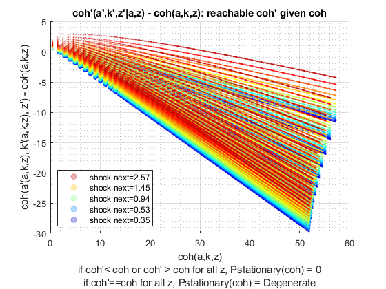
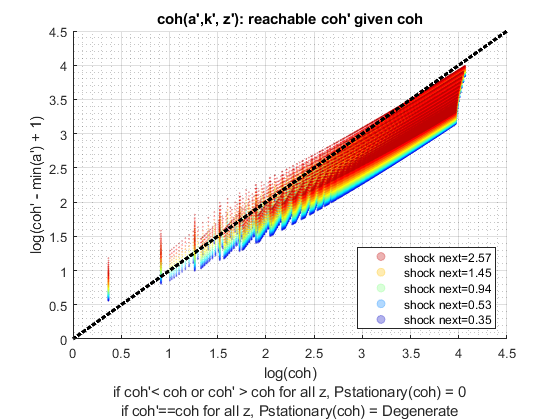
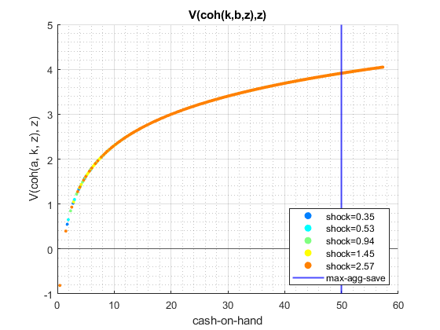
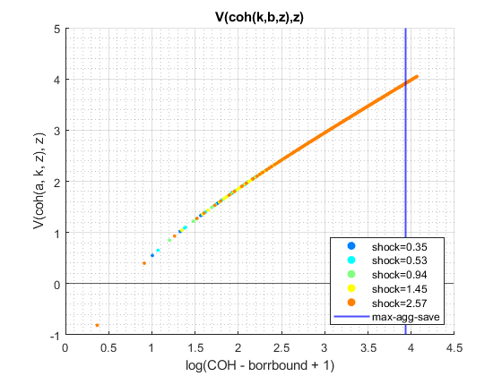
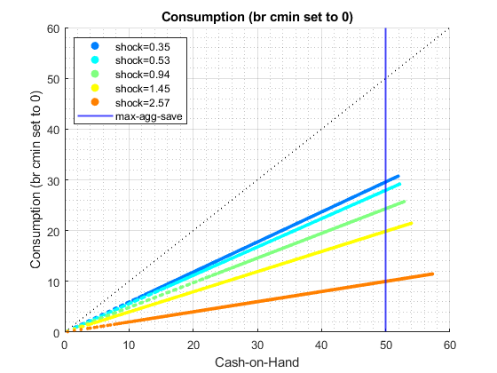
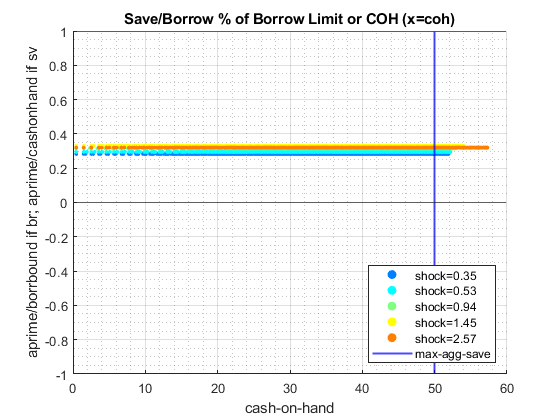
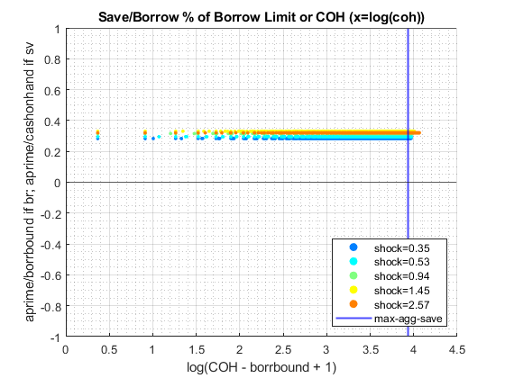
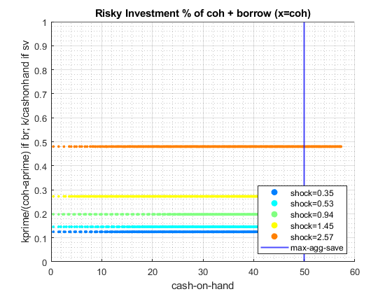
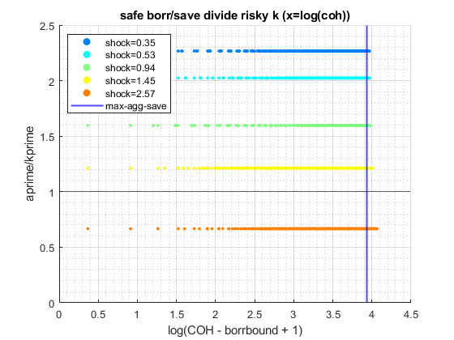

Graph Cash-on-Hand Tomorrow, Value, Policy given (A,K,Z) States Today (Risky + Safe Asset)
back to Fan's Dynamic Assets Repository Table of Content.
Contents
function ff_akz_vf_post_graph(varargin)
FF_AKZ_VF_POST_GRAPH genereate 4 sets of graphs
Generates three graphs:
- Cash-On-Hand Tomorrow given Cash-on-Hand Today
- Value Function Graph
- Policy Function Consumption and Asset Choices, Level and log
- Consumption and Asset as Percentages
Run this function directly with randomly generates matrixes for graphs and tables.
@param param_map container parameter container
@param support_map container support container
@param armt_map container container with states, choices and shocks grids that are inputs for grid based solution algorithm
@param result_map container contains policy function matrix, value function matrix, iteration results; als coh consumption and other matrixes
@example
ff_akz_vf_post_graph(param_map, support_map, armt_map, func_map, result_map);
Default
params_len = length(varargin); bl_input_override = 0; if (params_len == 6) bl_input_override = varargin{6}; end if (bl_input_override) % if invoked from outside overrid fully [param_map, support_map, armt_map, func_map, result_map, ~] = varargin{:}; else clear all; close all; % internal invoke for testing it_param_set = 4; bl_input_override = true; % Get Parameters [param_map, support_map] = ffs_akz_set_default_param(it_param_set); [armt_map, func_map] = ffs_akz_get_funcgrid(param_map, support_map, bl_input_override); % 1 for override % Generate Default val and policy matrixes params_group = values(armt_map, {'ar_a_meshk', 'ar_k_mesha', 'ar_z', 'mt_coh_wkb'}); [ar_a_meshk, ar_k_mesha, ar_z, mt_coh_wkb] = params_group{:}; params_group = values(func_map, {'f_util_standin', 'f_cons', 'f_coh'}); [f_util_standin, f_cons, f_coh] = params_group{:}; % Set Defaults mt_val = f_util_standin(ar_z, ar_a_meshk, ar_k_mesha); mt_pol_aksum = mt_coh_wkb.*(cumsum(sort(ar_z))/sum(ar_z)*0.4 + 0.4); mt_pol_a = mt_pol_aksum.*(0.7 - cumsum(sort(ar_z))/sum(ar_z)*0.3); mt_pol_k = mt_pol_aksum - mt_pol_a; mt_cons = f_cons(mt_coh_wkb, mt_pol_a, mt_pol_k); mt_coh = f_coh(ar_z, ar_a_meshk, ar_k_mesha); % Set Results Map result_map = containers.Map('KeyType','char', 'ValueType','any'); result_map('mt_val') = mt_val; result_map('cl_mt_pol_a') = {mt_pol_a, zeros(1)}; result_map('cl_mt_pol_k') = {mt_pol_k, zeros(1)}; result_map('cl_mt_cons') = {mt_cons, zeros(1)}; result_map('cl_mt_coh') = {mt_coh, zeros(1)}; end
Parse Parameters
% param_map params_group = values(param_map, {'it_z_n', 'fl_w_max'}); [it_z_n, fl_w_max] = params_group{:}; % support_map params_group = values(support_map, {'bl_graph_onebyones', 'bl_graph_val', 'bl_graph_pol_lvl', 'bl_graph_pol_pct', 'bl_graph_coh_t_coh'}); [bl_graph_onebyones, bl_graph_val, bl_graph_pol_lvl, bl_graph_pol_pct, bl_graph_coh_t_coh] = params_group{:}; params_group = values(support_map, {'bl_img_save', 'st_img_path', 'st_img_prefix', 'st_img_name_main', 'st_img_suffix'}); [bl_img_save, st_img_path, st_img_prefix, st_img_name_main, st_img_suffix] = params_group{:}; params_group = values(support_map, {'st_title_prefix'}); [st_title_prefix] = params_group{:}; % armt_map params_group = values(armt_map, {'ar_z', 'mt_coh_wkb', 'ar_a_meshk'}); [ar_z, mt_coh_wkb, ar_a_meshk] = params_group{:}; % func_map params_group = values(func_map, {'f_coh'}); [f_coh] = params_group{:}; % result_map params_group = values(result_map, {'mt_val', 'cl_mt_cons', 'cl_mt_coh', 'cl_mt_pol_a', 'cl_mt_pol_k'}); [mt_val, cl_mt_cons, cl_mt_coh, cl_mt_pol_a, cl_mt_pol_k] = params_group{:}; [mt_cons, mt_coh, mt_pol_a, mt_pol_k] = deal(cl_mt_cons{1}, cl_mt_coh{1}, cl_mt_pol_a{1}, cl_mt_pol_k{1}); % How many zs to Graph ar_it_z_graph = ([1 round((it_z_n)/4) round(2*((it_z_n)/4)) round(3*((it_z_n)/4)) (it_z_n)]);
Graphing COH today vs COH tomorrow
This plots the cash-on-hand today vs cash-on-hand tomorrow. This is an important graph that is key for analyzing the asset distribution. We would like to see at each point of the current cash-on-hand, what are the cash-on-hand that are reachable tomorrow. Note, here we are not plottin gbased on probability density for each discretized state tomorrow, just which states are reacable, meaning which states given states have non-zero probability of been reached tomorrow.
Three possible cases:
- next period cash-on-hand is always lower than current period cash-on-hand given policy function. This means it is not possible to exceed beyond this level of cash-on-hand in the stationary distribution. If we start mass lower than this level of cash-on-hand, it will never exceed this.
- next period cash-on-hand is always higher than current period cash-on-hand. Stationary distribution will never go below this level.
- next period cash-on-hand is identical to today cash on hand. This is an absorbing state.
The dimensionality of the graph is as follows:
- (a_n x k_n) by z_n state space and corresonding policy function
- all (a_n x k_n) and z_n combinations, one array, policy array, than given that, the cash-on-hand next period. meshed (a_n x k_n) and z_n with each other, crossed with another z_n.
- each color a different future z_n
if (bl_graph_coh_t_coh) % 1. Single Array A' Next Period and COH today ar_pol_a_full = mt_pol_a(:); ar_pol_k_full = mt_pol_k(:); ar_coh_full = mt_coh(:); % 2. COH Next Period mt_coh_next = f_coh(ar_z, ar_pol_a_full, ar_pol_k_full); % 3. Start Figure if(~bl_graph_onebyones) figure('PaperPosition', [0 0 21 4]); ar_sub_j = 1:1:3; else ar_sub_j = [3 2]; end for sub_j = ar_sub_j % 4. Legends and values if (ismember(sub_j, [2])) bl_log_coh = 1; else bl_log_coh = 0; end if (sub_j==1) mt_outcome = mt_coh_next; ar_xvar = ar_coh_full; st_y_label = 'cash-on-hand t+1 = coh(a''(a,k,z), k''(a,k,z), z'')'; st_x_label = 'cash-on-hand t = coh(a,k,z)'; st_title = 'coh(a''(coh(a,k,z),z), z''): reachable coh'' given coh'; st_legend_loc = 'southeast'; end if (sub_j==2) mt_outcome = log(mt_coh_next - min(ar_a_meshk) + 1); ar_xvar = log(ar_coh_full - min(ar_a_meshk) + 1); st_y_label = 'log(coh'' - min(a'') + 1)'; st_x_label = 'log(coh)'; st_title = 'coh(a'',k'', z''): reachable coh'' given coh'; st_legend_loc = 'southeast'; end if (sub_j==3) mt_outcome = mt_coh_next - ar_coh_full; ar_xvar = ar_coh_full; st_y_label = 'coh(a''(a,k,z), k''(a,k,z), z'') - coh(a,k,z)'; st_x_label = 'coh(a,k,z)'; st_title = 'coh''(a'',k'',z''|a,z) - coh(a,k,z): reachable coh'' given coh'; st_legend_loc = 'southwest'; end % 5. Start Figure if (~bl_graph_onebyones) subplot(1,3,sub_j) else figure('PaperPosition', [0 0 7 4]); end hold on; % 7. Color clr = jet(length(ar_z)); for m = 1:length(ar_z) % scatter fig_cur_z = scatter(ar_xvar, mt_outcome(:,m), 1, ... 'MarkerEdgeColor', clr(m,:), 'MarkerFaceAlpha', 0.3, ... 'MarkerFaceColor', clr(m,:), 'MarkerEdgeAlpha', 0.3); chart(m) = fig_cur_z; end % 8. Legends legend2plot = fliplr([1 round(length(ar_z)/4) round((2*length(ar_z))/4) round((3*length(ar_z))/4) length(ar_z)]); legendCell = cellstr(num2str(ar_z', 'shock next=%3.2f')); legend(chart(legend2plot), legendCell(legend2plot), 'Location', st_legend_loc); % 9. Titling etc grid on; title([st_title_prefix st_title]); ylabel(st_y_label); xlabel({st_x_label ... 'if coh''< coh or coh'' > coh for all z, Pstationary(coh) = 0', ... 'if coh''==coh for all z, Pstationary(coh) = Degenerate'}) if (bl_log_coh == 0) xline0 = xline(0); xline0.HandleVisibility = 'off'; yline0 = yline(0); yline0.HandleVisibility = 'off'; else xline0 = xline(log(0 - min(ar_a_meshk) + 1)); xline0.HandleVisibility = 'off'; yline0 = yline(log(0 - min(ar_a_meshk) + 1)); yline0.HandleVisibility = 'off'; end % 45 Degree Line if (sub_j~=3) hline = refline([1 0]); hline.Color = 'k'; hline.LineStyle = ':'; hline.HandleVisibility = 'off'; hline.LineWidth = 2.5; end grid on; grid minor; end % save file if (bl_img_save) mkdir(support_map('st_img_path')); st_file_name = [st_img_prefix st_img_name_main '_coh' st_img_suffix]; saveas(gcf, strcat(st_img_path, st_file_name)); end end 
Graphing Values
when testing with random data using f_util_standin, shocks will not have impacts on z, we will see that lower shocks tend to have slightly lower coh values, but k,b,z effects on f_util_standin fully captured by coh.
if (bl_graph_val) if (~bl_graph_onebyones) figure('PaperPosition', [0 0 14 4]); end for sub_j=1:1:2 if (~bl_graph_onebyones) subplot(1,2,sub_j) else figure('PaperPosition', [0 0 7 4]); end hold on; mt_outcome = mt_val; st_y_label = 'V(coh(a, k, z), z)'; clr = jet(length(ar_it_z_graph)); i_ctr = 0; for i = ar_it_z_graph i_ctr = i_ctr + 1; if (sub_j == 1) ar_x = mt_coh_wkb(:, i); else ar_x = log(mt_coh_wkb(:,i)' - min(ar_a_meshk) + 1); end ar_y = mt_outcome(:, i); scatter(ar_x, ar_y, 5, ... 'MarkerEdgeColor', clr(i_ctr,:), ... 'MarkerFaceColor', clr(i_ctr,:)); end grid on; grid minor; title([st_title_prefix 'V(coh(k,b,z),z)']) ylabel(st_y_label) if (sub_j == 1) xlinemax = xline(fl_w_max); xlabel({'cash-on-hand'}) else xlinemax = xline(log(fl_w_max - min(ar_a_meshk) + 1)); xlabel({'log(COH - borrbound + 1)'}) end legendCell = cellstr(num2str(ar_z', 'shock=%3.2f')); xlinemax.Color = 'b'; xlinemax.LineWidth = 1.5; legendCell{length(legendCell) + 1} = 'max-agg-save'; legend(legendCell([ar_it_z_graph length(legendCell)]), 'Location','southeast'); xline0 = xline(0); xline0.HandleVisibility = 'off'; yline0 = yline(0); yline0.HandleVisibility = 'off'; end % save file if (bl_img_save) mkdir(support_map('st_img_path')); st_file_name = [st_img_prefix st_img_name_main '_val' st_img_suffix]; saveas(gcf, strcat(st_img_path, st_file_name)); end end 
Graphing Choice Levels
if (bl_graph_pol_lvl) if (~bl_graph_onebyones) figure('PaperPosition', [0 0 21 8]); ar_sub_j = 1:1:6; else ar_sub_j = [1 4 2 5 3 6]; end for sub_j = ar_sub_j if (sub_j==1 || sub_j == 4) mt_outcome = mt_pol_a; end if (sub_j==2 || sub_j == 5) mt_outcome = mt_pol_k; end if (sub_j==3 || sub_j == 6) mt_outcome = mt_cons; % for borrowing models consumption could be at cmin, and next % period a' choice given default is a'=0, using the consumption % equation, this leads to not cmin but a negative consumption % level. so here adjust negative consumption to 0 mt_outcome(mt_cons <0) = 0; end if (~bl_graph_onebyones) subplot(2,3,sub_j) else figure('PaperPosition', [0 0 7 4]); end hold on; clr = jet(length(ar_it_z_graph)); i_ctr = 0; for i = ar_it_z_graph i_ctr = i_ctr + 1; ar_opti_curz = mt_outcome(:, i); if (sub_j==1 || sub_j == 2 || sub_j == 3) ar_a_curz_use = mt_coh_wkb(:,i)'; ar_opti_curz_use = ar_opti_curz'; fl_w_max_line = fl_w_max; elseif (sub_j == 4 || sub_j == 5 || sub_j == 6) ar_a_curz_use = log(mt_coh_wkb(:,i)' - min(ar_a_meshk) + 1); fl_w_max_line = log(fl_w_max - min(ar_a_meshk) + 1); if (sub_j == 4) % borrow save ar_opti_curz_use = log(ar_opti_curz' - min(ar_a_meshk) + 1); end if (sub_j == 5 || sub_j == 6) % risky capital choice and consumption, both are >= 0 ar_opti_curz_use = log(ar_opti_curz' + 1); end end ar_x = ar_a_curz_use; ar_y = ar_opti_curz_use; scatter(ar_x, ar_y, 5, ... 'MarkerEdgeColor', clr(i_ctr,:), ... 'MarkerFaceColor', clr(i_ctr,:)); end if (sub_j==1) st_y_label = 'Safe Savings/Borrowing'; st_x_label = 'Cash-on-Hand'; end if (sub_j==2) st_y_label = 'Risky K investment'; st_x_label = 'Cash-on-Hand'; end if (sub_j==3) st_y_label = 'Consumption (br cmin set to 0)'; st_x_label = 'Cash-on-Hand'; end if (sub_j==4) st_y_label = 'log(SaveBorr - borrbound + 1)'; st_x_label = 'log(COH - borrbound + 1)'; end if (sub_j==5) st_y_label = 'log(Risky K + 1)'; st_x_label = 'log(COH - borrbound + 1)'; end if (sub_j==6) st_y_label = 'log(Consumption + 1) (br cmin set to 0)'; st_x_label = 'log(COH - borrbound + 1)'; end grid on; title([st_title_prefix st_y_label]); ylabel(st_y_label); xlabel(st_x_label); legendCell = cellstr(num2str(ar_z', 'shock=%3.2f')); xlinemax = xline(fl_w_max_line); xlinemax.Color = 'b'; xlinemax.LineWidth = 1.5; legendCell{length(legendCell) + 1} = 'max-agg-save'; legend(legendCell([ar_it_z_graph length(legendCell)]), 'Location','northwest'); hline = refline([1 0]); hline.Color = 'k'; hline.LineStyle = ':'; hline.HandleVisibility = 'off'; if (sub_j==4 || sub_j == 5 || sub_j == 6) else xline0 = xline(0); xline0.HandleVisibility = 'off'; yline0 = yline(0); yline0.HandleVisibility = 'off'; end grid on; grid minor; end % save file if (bl_img_save) mkdir(support_map('st_img_path')); st_file_name = [st_img_prefix st_img_name_main '_pol_lvl' st_img_suffix]; saveas(gcf, strcat(st_img_path, st_file_name)); end end
Graphing Choice Percentages
% for borrowing models consumption could be at cmin, and next period a' % choice given default is a'=0, using the consumption equation, this leads % to not cmin but a negative consumption level. so here adjust negative % consumption to 0 mt_cons_use = mt_cons; mt_cons_use(mt_cons <0) = 0; mt_pol_a_use = mt_pol_a; mt_pol_a_use(mt_cons <0) = 0; mt_pol_k_use = mt_pol_k; mt_pol_k_use(mt_cons <0) = 0; if (bl_graph_pol_pct) if (~bl_graph_onebyones) figure('PaperPosition', [0 0 24 8]); ar_sub_j = 1:1:8; else ar_sub_j = [1 5 2 6 3 7 4 8]; end for sub_j = ar_sub_j mt_outcome = zeros(size(mt_pol_a_use)); mt_it_borr_idx = (mt_pol_a_use < 0); if (ismember(sub_j, [1,2,3,4])) bl_log_coh = 0; st_sv_suffix = '_xcoh'; st_title_suffix = ' (x=coh)'; else bl_log_coh = 1; st_sv_suffix = '_logxcoh'; st_title_suffix = ' (x=log(coh))'; end if (sub_j==1 || sub_j == 5) mt_outcome(mt_it_borr_idx) = -mt_pol_a_use(mt_it_borr_idx)./min(ar_a_meshk); mt_outcome(~mt_it_borr_idx) = mt_pol_a_use(~mt_it_borr_idx)./mt_coh_wkb(~mt_it_borr_idx); st_y_label = 'aprime/borrbound if br; aprime/cashonhand if sv'; st_legend_loc = 'southeast'; st_title = 'Save/Borrow % of Borrow Limit or COH'; end if (sub_j==2 || sub_j == 6) mt_outcome(mt_it_borr_idx) = mt_pol_k_use(mt_it_borr_idx)./(mt_coh_wkb(mt_it_borr_idx) - mt_pol_a_use(mt_it_borr_idx)); mt_outcome(~mt_it_borr_idx) = mt_pol_k_use(~mt_it_borr_idx)./mt_coh_wkb(~mt_it_borr_idx); st_y_label = 'kprime/(coh-aprime) if br; k/cashonhand if sv'; st_legend_loc = 'southeast'; st_title = 'Risky Investment % of coh + borrow'; end if (sub_j==3 || sub_j == 7) % If borrowing, how much is what is borrowing going % to K? If saving, how much is what is total % savings in K? mt_outcome(mt_it_borr_idx) = mt_pol_a_use(mt_it_borr_idx)./mt_pol_k_use(mt_it_borr_idx); mt_outcome(~mt_it_borr_idx) = mt_pol_a_use(~mt_it_borr_idx)./mt_pol_k_use(~mt_it_borr_idx); st_y_label = 'aprime/kprime'; st_legend_loc = 'northwest'; st_title = 'safe borr/save divide risky k'; end if (sub_j==4 || sub_j == 8) mt_outcome(mt_it_borr_idx) = mt_cons_use(mt_it_borr_idx)./(mt_coh_wkb(mt_it_borr_idx) - mt_pol_a_use(mt_it_borr_idx)); mt_outcome(~mt_it_borr_idx) = mt_cons_use(~mt_it_borr_idx)./mt_coh_wkb(~mt_it_borr_idx); st_y_label = 'c/(coh-aprime) if br; c/cashonhand if sv'; st_legend_loc = 'northeast'; st_title = 'Consumption Choice % of coh + borrow'; end if (~bl_graph_onebyones) subplot(2,4,sub_j) else figure('PaperPosition', [0 0 7 4]); end hold on; clr = jet(length(ar_it_z_graph)); i_ctr = 0; for i = ar_it_z_graph i_ctr = i_ctr + 1; ar_opti_curz = mt_outcome(:, i); if (bl_log_coh == 0) ar_x = mt_coh_wkb(:,i); else ar_x = log(mt_coh_wkb(:,i)' - min(ar_a_meshk) + 1); end ar_y = ar_opti_curz; scatter(ar_x, ar_y, 5, ... 'MarkerEdgeColor', clr(i_ctr,:), ... 'MarkerFaceColor', clr(i_ctr,:)); end grid on; title([st_title_prefix st_title st_title_suffix]) ylabel(st_y_label) legendCell = cellstr(num2str(ar_z', 'shock=%3.2f')); if (bl_log_coh == 0) xlinemax = xline(fl_w_max); xlabel({'cash-on-hand'}) else xlinemax = xline(log(fl_w_max - min(ar_a_meshk) + 1)); xlabel({'log(COH - borrbound + 1)'}) end xlinemax.Color = 'b'; xlinemax.LineWidth = 1.5; legendCell{length(legendCell) + 1} = 'max-agg-save'; legend(legendCell([ar_it_z_graph length(legendCell)]), 'Location', st_legend_loc); % xlim([min(ar_coh_curz)+1.5 15]); xline0 = xline(0); xline0.HandleVisibility = 'off'; yline0 = yline(0); yline0.HandleVisibility = 'off'; if (ismember(sub_j, [1,2,3,5,6,7])) yline0 = yline(1); yline0.HandleVisibility = 'off'; end if (ismember(sub_j, [1,5])) yline0 = yline(-1); yline0.HandleVisibility = 'off'; end grid on; grid minor; end % save file if (bl_img_save) mkdir(support_map('st_img_path')); st_file_name = [st_img_prefix st_img_name_main '_pol_pct' st_sv_suffix st_img_suffix]; saveas(gcf, strcat(st_img_path, st_file_name)); end end   
end